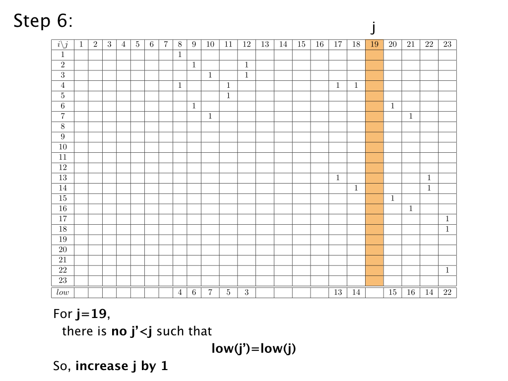
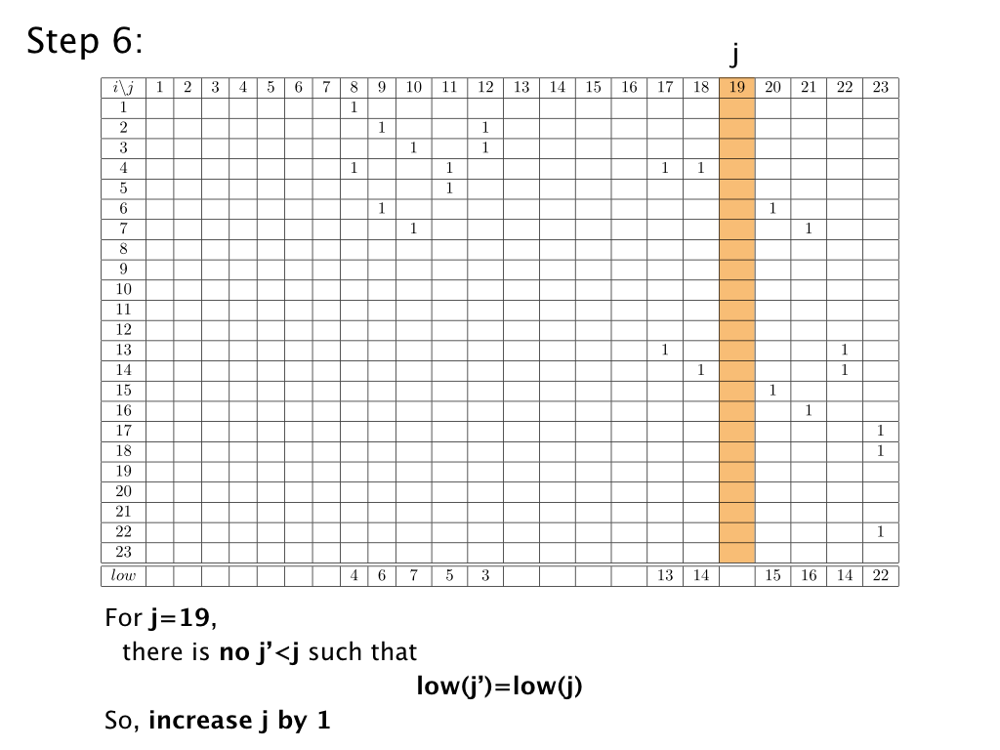

Let \(\Sigma^f\) be a filtration. In order to compute its persistent homology, we associate a matrix \(M\) to \(\Sigma^f\). \(M\) is called boundary matrix, which encodes the boundary relationships between the simplices of \(\Sigma\).

Imposing a total order on the simplices of \(\Sigma\) is a fundamental step for constructing the boundary matrix and for applying the reduction algorithm. From now on, we will call original filtering function the function \(f\) and injective filtering function the function \(f'\). When building the injective filtering function, we are creating a 1-to-1 correspondence between each simplex of \(\Sigma\) and the levels of the filtrations itself. Let us consider the filtration \(\Sigma^f\) depicted in Figure 2. A total ordering of its simplices can be defined as follows. Let \(\sigma\), \(\sigma'\) be two simplices of \(\Sigma\). We declair \(\sigma< \sigma'\) if and only if
Given a total ordering of the simplices of \(\Sigma\), we can set up the corresponding boundary matrix \(M\). \(M\) is a square matrix of size \(n \times n\), while its \((i, j)\) entries are defined to be $$M_{i,j}:=\begin{cases} 1 & \text{ if } \sigma_i \text{ is a face of } \sigma_j \text{ such that } dim(\sigma_i)=dim(\sigma_j)-1 \\ 0 & \text{ otherwise} \end{cases}$$
In the following, we display the boundary matrix \(M\) associated with the filtration \(\Sigma^f\) depicted in Figure 2 with respect to the total ordering defined in the previous example. Empty entries correspond to null values.
Given a column index \(j\) of the boundary matrix \(M\), we define \(low(j)\) as the row index of the lowest \(1\) in a non-null column \(j\). More formally, for each \(j\) in \(\{1, \dots, n\}\) such that column \(j\) is not null, $$low(j):=max\{i \,|\, M_{i,j}\neq 0\}$$
Example. In the following, the values assumed by \(low\) for each non-null column of the boundary matrix \(M\) considered in the previous example:
\(low(8)=4\),
\(low(9)=6\),
\(low(10)=low(12)=7\),
\(low(11)=5\),
\(low(17)=13\),
\(low(18)=low(19)=low(22)=14\),
\(low(20)=15\),
\(low(21)=16\),
\(low(23)=22\).
The persistent homology of a filtration \(\Sigma^f\) is computed by reducing the boundary matrix \(M\). A matrix \(R\) is reduced if, for each pair of nun-null columns \(j_1\), \(j_2\), \(low(j_1)\neq low(j_2)\). Equivalently, \(R\) is reduced if the associated \(low\) function is injective on its domain of definition.
Algorithm reduceMatrix describes the procedure for transforming the boundary matrix \(M\) associated to a filetered simplicial complex \(\Sigma^f\) into a reduced matrix \(R\)
function reduceMatrix(Matrix M)
{
Matrix R= M;
for(int i = 0; i < R.numColumn(); i++)
{
int j = sameLow(R,i);
while(j != NULL){
R.column(i) = (R.column(i) + R.column(j))%2;
j = sameLow(R);
}
}
return R;
}
function sameLow(Matrix R, int i)
{
for(int j = i; j >= 0; j--)
{
if(R.low(i) == R.low(j))
return j;
}
return NULL;
}
Given a boundary matrix \(M\), reduceMatrix considers, from left to right, the columns of \(M\). If two columns \(j\) and \(j'\), with \(j'< j\), have the same value of \(low\), column \(j'\) is added to column \(j\) and \(low(j)\). When no more columns on the left of \(j\) have \(low\) value equal to \(low(j)\), we process the next column. Once all the columns of \(M\) have been considered, the resulting matrix \(R\) is reduced.
The reduced matrix provides all the information required for extracting the persistence pairs of \(\Sigma^f\). We recall that each persistence pair is a pair of simplices representing two homology changes in the sublevel sets of function \(f\), in particular a newborn cycle and the death of the same cycle. Persistence pairs are extracted using the algorithm extractPairs.
function extractPairs(Matrix R)
{
bool paired[R.numColumn()]; //array of Booleans, set to false
pair persPairs[]; //collection of pairs
for(int j = R.numColumn(); j >= 0; j--)
{
if(paired[j]){
//the persistence pair has already been processed
}
else if(low(j)!=0){
//we have found a new persistence pair
persPairs.push(i,j);
paired[i]=true;
paired[j]=true;
}
else{
//we have found a cycle that is still alive
persPairs.push(j,infinity);
}
}
return pairs;
}
The obtained persistence pairs are of two kinds:
From a persistence diagram or from the graph shown above, it is not evident how to recognize the important information. Moreover, the persistence pairs in the graph are numerous even for such a small example. As it is, it would be hard to imagine this tool applied for the analysis of real data. At the beginning of this section, we already discussed the differences between the original filtering function \(f\) and the injective filtering function \(f'\). Such differences come into place also here, when analyzing results. The graph just shown describes the persistence pairs originated by the injective filtering function \(f'\). However, we wanted to study function \(f\) and this can be done by slightly modifying algorithm extractPairs as follows.
function extractPairs(Matrix R, float* function)
{
bool paired[R.numColumn()]; //array of Booleans
pair persPairs[]; //collection of pairs
for(int j = R.numColumn(); j >= 0; j--)
{
if(paired[j]){
//the persistence pair has already been processed
}
else if(low(j)!=0){
//we have found a new persistence pair
if(function[i]!=function[j])
{
persPairs.push(function[i],function[j]);
}
paired[i]=true;
paired[j]=true;
}
else{
//we have found a cycle that is still alive
persPairs.push(function[j],infinity);
}
}
return pairs;
}
Similarly to the previous case, each returned persistence pair \((p,q)\) corresponds to a simplex pair \((\sigma_i, \sigma_j)\) consisting of a positive and a negative simplex such that \((f(\sigma_i), f(\sigma_j))=(p, q)\). Its first simplex is said to be positive while the second one is called negative.
Analogously, a persistence pair \((p ,\infty)\) corresponds to the simplex pair \((\sigma_i,\infty)\) such that \(f(\sigma_i)=p\) and represents an essential homology class that borns at the instant \(f(\sigma_i)\) while the positive simplex \(\sigma_i\) is introduced.

 
